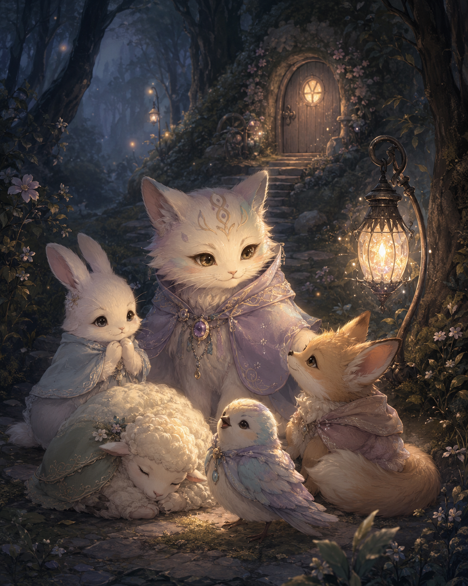

毎日届く短い物語と問いを通して、自分にかける言葉を少しずつ変えていくLINE 伴走型のプログラムです。
Zoom で話す講座ではありません。
でも、完全にひとりで進めるものでもありません。
あなたのペースで進みながら、LINE で小さくつながり続ける「ことばの伴走」です。
人に頼るのは少し苦手。でも、ひとりで頑張るとまた元に戻ってしまう。
誰かに全部話すのはしんどい。でも、そっと見守っていてほしい。
そんなあなたのための、14日間の小さな冒険です。

— ひとりで頑張らない、ことばの LINE 伴走プログラム —
さっきの物語で、あなたは
モヤの中にいた小さな声を見つけました。
こわかった気持ち。
休みたかった気持ち。
言いたかった気持ち。
進みたかった気持ち。
それは、弱さではありません。
ずっと「大丈夫」と言いながら、
心の奥にしまってきた
あなたの大切な本音でした。
でも、日常に戻ると、
またいつものように
「大丈夫」「私が我慢すればいい」
「ひとりで何とかしなきゃ」
と思ってしまう日があります。
だから、この先には
毎日ひとつずつ、
必要なことばを受け取りながら進む
14日間の小さな冒険があります。
14日間の小さな冒険とは？
毎日届く短い物語と問いを通して、自分にかける言葉を少しずつ変えていくLINE 伴走型のプログラムです。
Zoom で話す講座ではありません。
でも、完全にひとりで進めるものでもありません。
あなたのペースで進みながら、LINE で小さくつながり続ける「ことばの伴走」です。
人に頼るのは少し苦手。でも、ひとりで頑張るとまた元に戻ってしまう。
誰かに全部話すのはしんどい。でも、そっと見守っていてほしい。
そんなあなたのための、14日間の小さな冒険です。
こんな方におすすめです
毎日の流れ
今日の物語を読む
LINE に届く短い物語を読みます。その日のテーマに合わせて、今の自分の心を少しだけ見つめます。
今日の問いに答える
物語のあとに、小さな問いが届きます。
ボトル＆カードアプリをひく
その日のあなたに必要な色・カード・ことばの処方箋を受け取ります。ここで出たアファメーションが、その日のあなたに灯す言葉になります。
アファメーションを唱える
受け取った言葉を、心の中で唱えたり声に出したりしてみます。すぐに信じられなくても大丈夫。「この言葉、今の私にどう響くかな？」と感じてみるだけで大丈夫です。
LINE に送る
その日のアファメーションと、唱えてみて感じたことを LINE に送ってください。
このプログラムで受け取れるもの
※無制限の個別相談ではありません。毎日受け取ったことばを LINE で共有しながら、小さく続けるための伴走プログラムです。
14日間で期待できる変化
01
「大丈夫」と言う前に、本音に気づきやすくなる
反射的に「大丈夫です」と言ってしまう場面で、「本当は今どう感じてる？」と自分に聞けるようになります。
02
不安なとき、自分を責める言葉を減らせるようになる
「私には無理」「どうせ変われない」そんな言葉が出てきたとき、今の自分に必要な言葉を選び直す練習ができます。
03
疲れている自分に、気づきやすくなる
頑張り続ける前に「私、少し疲れているかも」と気づけるようになります。
04
飲み込んだ気持ちを、自分だけには認められるようになる
まずは自分の中で「本当は嫌だった」「本当はわかってほしかった」と気づいてあげること。その小さな気づきが本音を置き去りにしない練習になります。
05
変わりたい気持ちを、小さな一歩に変えやすくなる
今日の言葉をひとつ受け取る。少し感じてみる。その小さな一歩を重ねることで「私にもできるかもしれない」という感覚を育てていきます。
06
ひとりで抱え込む前に、戻ってこられる場所ができる
完璧な答えを書く必要はありません。短い一言でも「今日の自分を見た」という大切な一歩になります。
なぜ14日間なの？
変わるために必要なのは、一度の大きな決意よりも、毎日小さく「自分にかける言葉」を変えていくことです。
でも、いきなり長期間がんばろうとすると、それだけで心が重くなってしまうことがあります。
だからまずは、14日間。
短すぎず、長すぎず、「少し続けてみよう」と思える小さな期間です。
14日間は、本当の自分を取り戻すための最初の小さな冒険です。
14日間が終わったあとも続けたい時は？
14日間の最後に、今のあなたの変化を振り返るメッセージをお届けします。
希望される方には、次のステップをご案内します。
・もう一度14日間を続ける
・個別相談で今の本音を整理する
・継続サポートで、ことばの習慣を育てる
・さらに深く自分のテーマに向き合う
14日間は、「自分に必要な言葉を、自分にかけてあげる」という新しい習慣を育てていくための入口です。
よくある質問
Zoom はありますか？
ありません。LINE で進めるプログラムです。顔出しや通話は必要ありません。
毎日長文を送らないといけませんか？
長文でなくて大丈夫です。その日に受け取ったアファメーションと、感じたことを一言でも大丈夫です。
相談し放題ですか？
無制限の個別相談ではありません。毎日のアファメーションの受け取り確認と、必要に応じた短い返信が中心です。深く話しながら整理したい方には、別途個別相談をご案内する場合があります。
できない日があったらどうなりますか？
できない日があっても大丈夫です。大切なのは完璧に続けることではなく、戻ってこられる場所を持つこと。できる日からまた、小さく再開していきましょう。
物語体験アプリだけでも変われますか？
物語体験アプリは、今のあなたの中にある本音に気づくための入口です。でも、日常に戻ると、また「大丈夫」と言ってしまう日もあります。14日間の小さな冒険は、その気づきを日常に灯し続けるための続きのプログラムです。
14日間で終了しても大丈夫ですか？
もちろんです。14日間だけでも完結できるプログラムです。続けることを前提にしたものではありません。
参加費
通常価格
19,800円
↓
物語体験アプリ完成記念・初回限定価格
9,800 円
※今後は通常価格でのご案内を予定しています。
※初回価格は、予告なく終了する場合があります。
以下の口座にお振込ください。
| 銀行名 | 住信SBIネット銀行 |
| 銀行コード | 0038 |
| 支店番号-口座番号 | 107-8418034 |
| 支店名 | バナナ |
| カナ氏名 | コジマサユリ |
振込後に、LINE にて振込完了・振込名のわかるスクショを送ってください。
ご入金確認後、14日間の小さな冒険の開始案内をお届けします。
※振込手数料はご負担をお願いいたします。
ひとりで頑張り続けなくていい。
でも、誰かに全部話さなくても大丈夫。
まずは14日間、
毎日ひとつずつ
自分に必要なことばを受け取りながら、
本当のあなたを取り戻す小さな冒険を
一緒に進めていきましょう。
振込先は上記と同じです。振込後に LINE でご連絡ください。